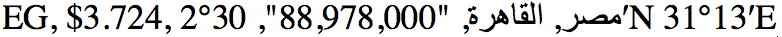
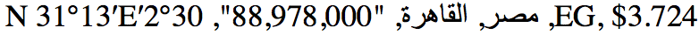

Updated Thu 2 Jul 2015 • tags bidi, scriptnotes
Increasingly, questions are arising at the W3C about how to specify bidi handling for plain text environments. Most recently this includes JSON formats and CSV formats.
My aim in this page is to provide background information that can help with those discussions, and carry useful ideas from one discussion to the next. I also add some personal thoughts on implementation alternatives, given current data.
I'm using this page to clarify things for myself. It is only a draft, and will be updated from time to time, as new information becomes available, as feedback arrives, and as ideas are clarified. Latest update was 2015-10-02 15:04.
If you are not familiar with what the Unicode Bidirectional Algorithm (UBA) does and doesn't do, read this first.
A base direction needs to be determined (ie. directional context) in order to display bidirectional text correctly. That will determine the order of runs of ltr and runs of rtl text, and the location of punctuation. By hook or by crook this will be set, whether explicitly or by default.
In what follows, the word paragraph indicates a run of text followed by a hard line-break in plain text, but may signify different things in other situations. In CSV it equates to 'cell', so a single line of comma-separated items is actually a set of comma-separated paragraphs. In HTML it equates to the lowest level of block element, which is often a p element, but may be things such as div, li, etc., if they only contain text. In JSON, it equates to a quoted string value.
There are a number of possible ways of determining the base direction. In an attempt to keep this from being overly abstract, I'll use HTML to illustrate the alternatives. When I say metadata I mean information which could be an annotation associated with the data, could be markup in scenarios that allow that, could be a higher-level protocol such as HTTP (in theory), etc.
dir attribute on the html tag or some other tag in HTML.) If the base direction is set by metadata, there is no need to look for the first-strong character to determine the base direction – it is already determined. dir=auto on an HTML element.)dir attributes in your HTML file.)Where there is a possibility to use metadata rather than control codes, it is advisable to use it – particularly for content that is created by an author.
In fact, for structural components, above the paragraph level, it is not possible to use the Unicode bidi control characters to define direction for the paragraphs it contains, since the effect is terminated by a paragraph end.
Reasons to avoid relying on control characters at the paragraph level to set direction include the following:
There may also be embedded ranges of text within a single paragraph that need to have a different base direction. For example,
"The title was '!NOITASILANOITANRETNI'."
where the span within the single quotes is in Hebrew/Arabic/Divehi, etc., and needs to have a RTL base direction, instead of the LTR base direction of the surrounding paragraph, in order to place the exclamation mark correctly.
Again, it's typically easier and safer for authors to use markup to indicate such inline ranges. In HTML you would usually use an inline element with dir attribute to establish the base direction for such runs of text. If you can't mark up the text, such as in HTML's title element, or any environment that handles only plain text content, you have to resort to Unicode's paired control characters to establish the base direction for such an internal range.
Furthermore, inline ranges where the base direction is changed should be isolated from surrounding text, so that the UBA doesn't produce incorrect results due to interference across boundaries. See an example of how this can produce incorrect ordering of things such as text followed by numbers in HTML, or another example of how it can affect lists.
This means that if you are using Unicode control codes you should use RLI/LRI...PDI rather than RLE/LRE...PDF. These isolating codes are fairly new, and applications may not yet support them.
A word about the Unicode characters U+200F RIGHT-TO-LEFT MARK (RLM) and U+200E LEFT-TO-RIGHT MARK (LRM) is warranted at this point.
The first point to be clear about is that neither RLM nor LRM establish the base direction for a range of text. They are simply invisible characters with strong directional properties.
This means that you cannot use RLM for example, to make the text W3C appear to the left of the Hebrew text in the following example.
The title is "פעילות הבינאום, W3C".
For this you can only use metadata or the paired control characters.
Of course, if you are detecting base direction using first-strong heuristics then RLM and LRM can be useful for setting the base direction where the text in question begins with something that would otherwise give the wrong result, eg.
"نشاط التدويل" is how you say "i18n Activity" in Arabic.
Here an LRM could be placed at the start of the text, before the strong RTL Arabic characters, to prevent the algorithm from assuming that the text should be right-to-left. (Remember that if metadata is used to set the base direction, that character is ignored, unless the metadata specifically says that first-strong heuristics should be used.)
It's worth noting that the order in which columns in a plain-text csv file are displayed will be affected by the contents, and bidirectional or rtl+numeric data will be hard for humans to read unless unicode control characters are used in abundance. For example, without any additional information over and above the UBA, take the following data:
If we put that data into a single line, separated by commas, and opened it in a simple text editor that supports the Unicode bidi algorithm, we would see the following if the base direction is LTR:

If the base direction is RTL, we would see:

Note how there are different problems in each case, and that some of the values appear to be different from what was intended. Don't overlook, by the way, that although the order of the arabic text looks the same, the items appear to be in the wrong columns, respectively, in the LTR version.
Of course, the above is only smoke and mirrors: the underlying order of characters is accurate, and readable by an application, and starts always with column 1.
Now lets look at what's possible if we can associate metadata with the table, columns, cells, etc.
If most of the content of a csv file should be treated as rtl, it is easiest to indicate this in the table metadata, and allow it to be inherited by all cells. It's also worth specifying a default direction, ie. for the case where no metadata is provided.
However, certain cells may need to have a specific direction in order for the data to be readable, and it's not always easy to detect for which cells that applies. For example, cells in a rtl table that contains mac address numbers, equations, negative signs, telephone numbers, and such may need to be given a LTR direction within an overall RTL dataset in order to be comprehensible to the end user. Consider these examples, which show how, in some cases, such as Mac addressses, the user could actually be completely unaware that the data they are seeing is incorrect if the appropriate base direction setting was missing.
It is possible that what is needed for these cases can be achieved much of the time by setting the direction for the column, such that it is inherited by those cells. This is based on the assumption that all cells in a column contain the same type of information in the same format.
There may also be some linguistic variations for things like equations and ranges: for example, in Arabic a range of 'ten to twenty' is likely to be expressed visually as "20-10" (ie. base direction needs to be rtl), whereas in Hebrew you may see "10-20" (base direction ltr). (As always, the underlying sequence of codepoints should be the same.)
The bottom line seems to be that, unless you take drastic action and fill the file with directional control codes, CSV files containing bidi text or RTL text with numbers are likely to not always be human readable. They should, however, be machine readable, as long as the data is in logical, rather than visual, order.
The next questions to be answered are what direction information is needed for machines to correctly display results, eg. on a web page, in a spreadsheet, etc? And how is it best to provide that information?
tbc...
If a WebVTT script is in a language such as Arabic, Hebrew, Divehi, Persian, Urdu, etc., then most, if not all, of the cue text will need to have a base direction of RTL. There needs to be a way to apply that automatically to all the cues in the file, with mechanisms to change the text in a particular cue or line where a different base direction is needed.
This base direction would only be applied to the content of the cue, not to any of the additional information in the file, such as time settings, ids, etc. Unless you have a clever editor, it would also not be applied to the display of the cue text in the raw text file, either. This may produce occasional difficulties for editing of bidirectional text in the source.
It appears to me that there are two possible approaches to automatically propagating base direction to the cue text: heuristically or declaratively. Heuristically means testing the text itself, and declaratively means providing markup or other metadata to indicate the preferred base direction.
The currently specc'ed approach relies on heuristics, though with a slight twist which will be explained below. What follows is my current understanding of how the WebVTT spec does this.
Establish the base direction of all of the lines in a given cue text by detecting the direction of the first strong character in the first line of the cue, ie. where there are multiple lines, assign the base direction for following lines based on the of the first line, ignoring the normal UBA approach of treating each line as a paragraph. (Line breaks in UBA constitute paragraph breaks and the base direction needs to be redetected using first-strong heuristics for each paragraph. This is also different to the way CSS deals with plain text, since it follows the UBA rules.)
Strategies for where this approach fails:
(a) a line that should be rtl, but starts with non-rtl characters (and vice versa), such as
00:38.500 --> 00:39.500 <v Maha>"C مدخل إلى!"
The C should appear to the right of the line, and the ! to the left, but you will get the reverse.
Solution: put ‏ at the start of the line.
(b) same applies to a line with no strong character (such as a telephone number) or a mixture of strong and non-strong characters (such as a Mac address) but that has to ordered in a particular way, eg.
00:38.500 --> 00:39.500 bahrain مصر kuwait
(c) multiline cues in multiple scripts/languages, eg.
00:22.000 --> 00:24.000 שלום! Hello!
The exclamation mark in the first line will appear to the left, as expected, because the first-strong character in the cue is a Hebrew character (rtl). That of the second line will also appear to the left, which is NOT expected, since the second line's directionality is set by that of the first line.
Solution: ‎ at the start of the second line will not have any effect, since the implementation doesn't test for first-strong characters in the second line. The only way i can think of to fix this is to set an embedding level using RLI ... PDF characters around 'Hello!'. Apart from the fact that it is a pain to do this for a large number of cases (such as in the video from which this example was taken), that the characters at either end of the text lend some fragility to the line, and that those Unicode control characters are not available on keyboards, RLI/LRI/FSI ... PDI are not currently supported by browsers or keyboards and it will be necessary to use RLE/LRE instead (which actually have the same problems).
(d) the implementation must ignore anything that appears before the actual cue text, eg.
00:16.000 --> 00:18.000 <v Maha>السلام عليكم!
the characters <v Maha> must be ignored. Same goes if you have span or other markup at the start of the line.
(e) inline text may need a different base direction, eg.
00:37.000 --> 00:37.500 The title of my new book is "مدخل إلى C++". No wait...!
One way to do this would be to use RLI/LRI ... PDI control characters. These are generally not preferred because they are invisible and can be difficult to manage, and because they are not easy to input.
Since WebVTT supports span elements(?), this would offer the opportunity to apply directionality declaratively, which is often to work with.
Give WebVTT the ability to say
STYLE direction:rtl;
at the top of the file, then the default base direction for the content is established by that statement, and displayed text for all lines of cue text should get a base direction of rtl, regardless of their first-strong character, unless some lower level directive intervenes. The important thing to bear in mind is that this approach is incompatible with first-strong heuristics, and ‎ or ‎ at the start of the para are of no consequence.
When you have paragraphs/lines that should not have a direction of rtl (like those mentioned above) you need a way to change their base direction using some kind of metadata annotation, on a per paragraph basis.
One could probably easily enough allow for some metadata declaration at the cue level to change the direction of content, however it is actually necessary to be able to change the direction of content for any paragraph/line level, eg. it may be the second line in the cue that has to be set to ltr. Since lines in WebVTT cues are not bounded by markup, i'm not sure how one would do this using metadata/markup.
So what i'm saying is that, if we have the file-level declaration for direction, it has to come with some other mechanism for indicating the desired base direction for individual paragraphs.
One solution might be to use Unicode embedding control characters, but, as described above, many people would prefer to use a declarative approach because of the difficulties involved in using control characters. It may also be possible to surround each line in question with a span, but this is a rather cumbersome and inefficient approach.